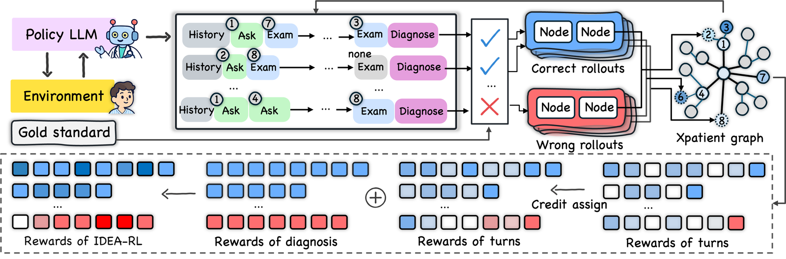
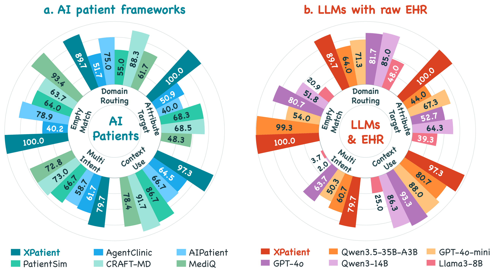
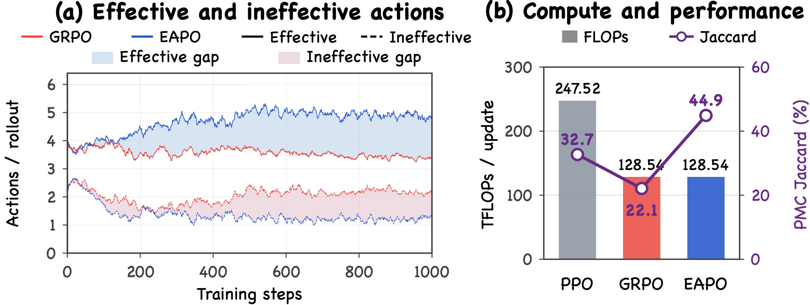
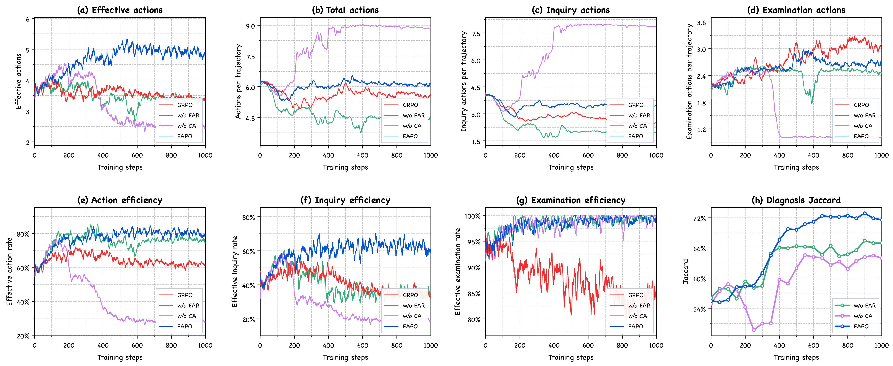

No Critic, Which Clue?
Quantifying Evidence Advantages in Interactive Diagnosis

Click to zoomFigure 1. IDEA-RL pairs structured clinical simulation (XPatient) with critic-free Evidence Advantage Policy Optimization (EAPO) to turn cross-trajectory diagnostic outcomes into turn-level inquiry credit.
Overview
Interactive clinical diagnosis requires an agent to actively ask questions and order tests before committing to a decision. Standard LLM patient simulators often leak unrequested symptoms, while outcome-only reinforcement learning rewards final diagnoses without revealing which earlier inquiries uncovered decisive clues. IDEA-RL addresses both challenges: XPatient restricts every reply to specifically requested case facts, and EAPO compares trajectories on the same case to credit newly discovered evidence and propagate feedback backward without a critic network. Across three clinical benchmarks, a compact 4B agent learns to gather more informative clues per case and outperforms frontier proprietary models and 32B medical specialists.
Method
Reliable Evidence Tracking (XPatient)
When prompted directly with raw health records, LLM patients frequently volunteer hidden symptoms on broad questions or drift across follow-ups, obscuring what an agent actually learned. XPatient grounds patient replies in structured clinical facts, separates objective test lookups from dialogue, and tracks newly uncovered clues turn by turn so repeated questions earn no extra credit.

Click to zoomFigure 2. Across five clinical interaction dimensions, XPatient prevents unrequested symptom leakage while consistently outperforming existing AI patient frameworks and raw-EHR LLMs.
Critic-Free Process Credit (EAPO)
Supervising only the final diagnosis leaves an agent guessing which question or test mattered. EAPO pools diagnostic outcomes across rollouts on the same case to reward clues at their first acquisition, keeps routine unrecorded inquiries neutral rather than penalized, and propagates turn-level credit backward along the consultation—matching lightweight critic-free training cost.

Click to zoomFigure 3. Process-level evidence credit steadily increases effective inquiries while cutting wasted actions, matching GRPO's lightweight update cost at substantially higher OOD diagnosis Jaccard.
Results
Stronger diagnosis stems from higher-yield evidence gathering rather than model scale alone. Across MIMIC-IV, DDxPlus, and out-of-distribution PMC-Patients-v2, our Qwen3-4B agent uncovers more effective clues per case and achieves the highest Diagnosis Jaccard over proprietary models and 32B medical specialists.

Click to zoomFigure 4. Combining first-acquisition evidence rewards with backward credit propagation sustains high inquiry and examination efficiency throughout training without collapsing into redundant questioning.
Single-Case Mechanism Video
A 59-second narrated walkthrough showing how XPatient links each inquiry to structured case nodes before replying, and how EAPO converts unlocked nodes across same-case rollouts into turn-level credit.